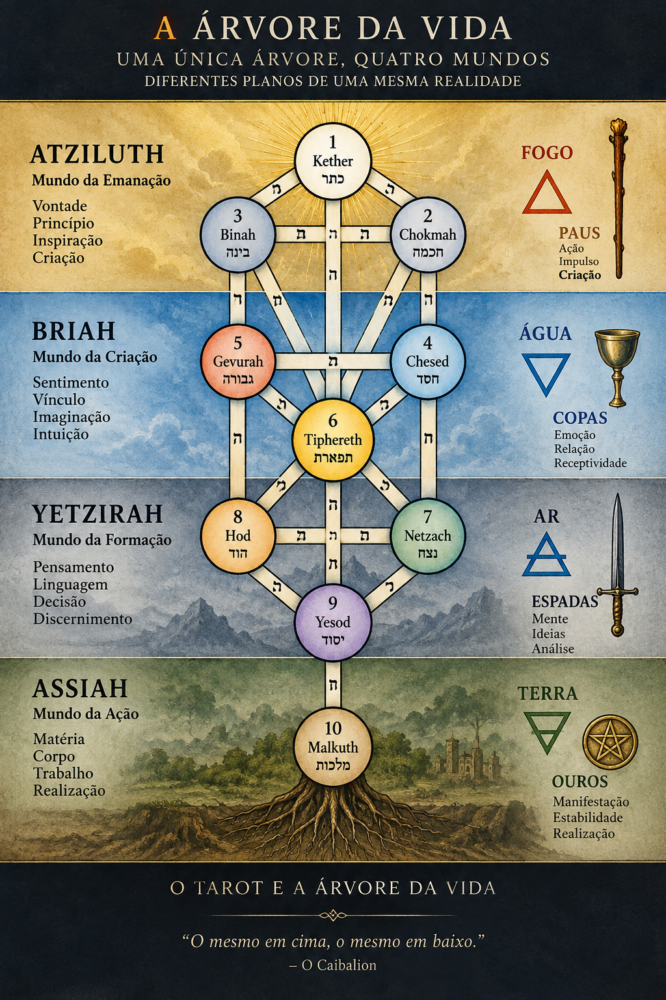

O TAROT — Entre a História, o Símbolo e a Cabala Hermética
Uma jornada pelo Tarot através do Rider-Waite-Smith
“O símbolo não entrega o mistério. Ele nos conduz até a porta.”
Introdução
O Tarot é, ao mesmo tempo, um conjunto de cartas, uma tradição simbólica e, para muitos de seus estudiosos, um instrumento de investigação interior.
Mas essas três dimensões não nasceram juntas.
Antes de ser associado à adivinhação, à Cabala ou ao Hermetismo, o Tarot pertenceu ao universo dos jogos de cartas da Itália renascentista. Sua história documentada começa no século XV, enquanto grande parte das correspondências ocultistas que hoje associamos às cartas surgiu muito mais tarde.
Por isso, este artigo seguirá dois caminhos simultaneamente: primeiro, aquilo que podemos reconstruir historicamente; depois, aquilo que as tradições simbólicas posteriores fizeram com o Tarot.
Essa distinção é importante.
Uma coisa é perguntar de onde vieram as cartas. Outra é perguntar o que elas passaram a significar.
Antes de interpretar, aprender a olhar
Para começar a estudar Tarot, talvez seja mais útil aprender a observar uma carta do que decorar imediatamente dezenas de significados.
Uma imagem possui personagens, objetos, cores, gestos, direção, número, posição e relações entre seus elementos. Antes de perguntar “o que esta carta significa?”, podemos perguntar:
O que estou vendo?
A interpretação nasce desse primeiro olhar.
O Rider-Waite-Smith
Neste estudo utilizaremos o Tarot Rider-Waite-Smith como principal referência visual, especialmente porque suas imagens tornaram os Arcanos Menores numerados particularmente ricos em elementos simbólicos.
Publicado em 1909, o baralho foi concebido por Arthur Edward Waite e ilustrado por Pamela Colman Smith. Sua importância para a tradição moderna do Tarot é enorme e será retomada ao longo deste estudo.
As 78 cartas
O Tarot tradicional possui 78 cartas, divididas em três grandes grupos:
- 22 Arcanos Maiores — grandes imagens e processos simbólicos.
- 40 Arcanos Menores numerados — manifestações desses processos nos diferentes campos da experiência.
- 16 cartas da Corte — figuras que representam modos de expressão, movimento e manifestação.
Podemos guardar, desde já, uma chave simples para acompanhar todo o restante deste artigo:
O Maior mostra a paisagem. O Menor mostra nossos passos. A Corte mostra quem caminha — ou como caminha.
Uma distinção fundamental
Os Arcanos Maiores não precisam ser compreendidos apenas como acontecimentos externos. Eles podem representar forças, circunstâncias ou grandes processos que se apresentam diante de nós e que ultrapassam nosso controle imediato.
Os Arcanos Menores mostram como essas forças encontram expressão na experiência cotidiana: pensamentos, sentimentos, escolhas, ações, conflitos, relações, trabalho e realização.
Já as cartas da Corte introduzem outra dimensão: a maneira pela qual uma determinada energia é incorporada, expressa ou conduzida.
O caminho que iremos percorrer
A partir daqui, iniciaremos a jornada pelos Arcanos Maiores, passando depois pelos quatro naipes dos Arcanos Menores, pelas cartas da Corte e, finalmente, pelas correspondências da tradição Hermética e da Cabala.
Ao longo do caminho, uma pergunta permanecerá como fio condutor:
O Tarot está apenas tentando nos dizer o que acontecerá — ou pode nos ajudar a compreender o que está acontecendo?
A História do Tarot — Antes do Mistério, o Jogo
Quando hoje pensamos em Tarot, é comum imaginar imediatamente cartas usadas para adivinhação, símbolos ocultos, Cabala, astrologia e mistérios antigos. Mas a história documentada das cartas nos conduz primeiro a outro lugar: à Itália do século XV.
As primeiras referências conhecidas ao Tarot aparecem nas décadas de 1440 e 1450, em ambientes ligados às cortes italianas. Naquele momento, as cartas pertenciam ao universo dos jogos e do entretenimento aristocrático.
O conjunto que posteriormente reconhecemos como Tarot era formado por cartas de naipes e por um grupo adicional de cartas triunfais, chamadas posteriormente de Arcanos Maiores. Havia ainda uma carta especial, o Louco.
A estrutura que se consolidaria compreende 78 cartas: 56 cartas dos quatro naipes, 21 triunfos e o Louco. Os naipes italianos eram formados por Copas, Espadas, Paus e Ouros — ou equivalentes históricos como bastões e moedas.
Os primeiros Tarots conhecidos
Entre os testemunhos mais importantes encontram-se os chamados baralhos Visconti-Sforza, produzidos em Milão em meados do século XV. Essas cartas foram criadas em um contexto aristocrático e apresentam uma riqueza artística que revela a importância social que o jogo podia adquirir nas cortes renascentistas.
Algumas dessas cartas sobreviveram até os nossos dias, embora nenhum dos primeiros conjuntos tenha chegado completamente preservado. Mesmo assim, os exemplares existentes permitem reconstruir parte importante da estrutura inicial do Tarot.
Outro testemunho fundamental é o chamado Tarot Sola-Busca, produzido no final do século XV. Ele é especialmente importante para a história visual do Tarot porque apresenta um conjunto completo de cartas gravadas e uma iconografia que influenciaria posteriormente outras representações.
De onde vieram as cartas?
O surgimento do Tarot não pode ser separado da história mais ampla das cartas de jogar na Europa.
As cartas chegaram à Europa durante a Baixa Idade Média e possuem antecedentes orientais. Entre os testemunhos mais importantes estão os baralhos associados ao mundo mameluco, encontrados no Egito e em outras regiões do Oriente Médio.
Esses baralhos apresentavam naipes que possuem paralelos significativos com os sistemas europeus posteriores, incluindo espadas, taças, moedas e bastões ou objetos semelhantes.
Isso não significa que o Tarot europeu seja simplesmente uma cópia de um único baralho oriental. A formação das cartas europeias foi um processo histórico complexo, no qual diferentes tradições visuais e lúdicas foram transformadas e reorganizadas.
Quando surgiu a adivinhação?
Aqui encontramos uma das distinções mais importantes para quem deseja estudar Tarot com seriedade.
O Tarot renascentista não nasceu, segundo as evidências atualmente disponíveis, como um sistema de adivinhação. Seu primeiro contexto documentado é o do jogo.
A associação sistemática entre Tarot, ocultismo e práticas divinatórias aparece muito mais tarde, especialmente a partir do final do século XVIII e durante o século XIX.
É nesse momento que o Tarot começa a receber interpretações que o relacionam a antigas tradições egípcias, ao Hermetismo, à astrologia, à Cabala e a outros sistemas simbólicos.
O nascimento de uma nova tradição
Em 1781, Antoine Court de Gébelin publicou um ensaio no qual apresentou a hipótese de que o Tarot possuiria uma origem egípcia antiga e estaria relacionado a um suposto livro de sabedoria.
Essa hipótese teve enorme importância para a história posterior do Tarot, mas deve ser compreendida como uma interpretação do século XVIII, e não como uma demonstração histórica de que o Tarot tenha vindo do Egito antigo.
A partir daí, outros autores passaram a construir novas correspondências. No século XIX, Éliphas Lévi aproximou os Arcanos Maiores do alfabeto hebraico e dos caminhos da Árvore da Vida. Posteriormente, essas relações seriam desenvolvidas por ordens e escolas ocultistas, especialmente a Hermetic Order of the Golden Dawn.
É nesse ponto que começa a tomar forma o Tarot que conhecemos hoje como instrumento de investigação simbólica e esotérica.
Portanto, precisamos manter duas histórias diante dos olhos: a história do Tarot como objeto cultural e a história das interpretações que foram sendo construídas sobre ele.
A primeira nos conduz à Itália renascentista. A segunda nos conduz ao universo do ocultismo ocidental moderno.
E é justamente entre essas duas histórias que começa a nossa investigação.
Documento, tradição e interpretação
Para evitar que tradição e história sejam confundidas, adotaremos neste estudo uma regra simples:
- Documento: aquilo que pode ser sustentado por fontes históricas e evidências materiais.
- Tradição: aquilo que escolas, autores ou correntes posteriores transmitiram e desenvolveram.
- Interpretação: a leitura simbólica que fazemos dessas imagens e correspondências.
Essa distinção não diminui o valor da tradição esotérica. Pelo contrário: permite que ela seja estudada em sua própria dimensão, sem precisar transformar uma hipótese simbólica em um fato histórico.
Os 22 Arcanos Maiores
Os Arcanos Maiores formam o grande eixo simbólico do Tarot. São vinte e duas imagens que, observadas em conjunto, podem ser compreendidas como uma sequência de estados, experiências, escolhas, rupturas, transformações e integrações.
Para fins didáticos, podemos pensar neles como uma grande paisagem. O Arcano Maior não precisa representar simplesmente “algo que vai acontecer”. Ele pode indicar uma força, uma condição ou um processo que se apresenta diante daquele que consulta.
A sequência começa com o Louco e termina com o Mundo. Mas essa sequência não deve ser entendida apenas como uma linha reta. O fim de um ciclo também pode preparar o início de outro.
Por isso, estudaremos cada carta procurando observar primeiro a imagem, depois seus símbolos e, somente então, suas possibilidades de interpretação.
0 — O Louco
O Louco é o ponto de partida da jornada.
No Rider-Waite-Smith, encontramos uma figura que caminha próxima ao limite de um precipício, acompanhada por um pequeno cão. O personagem carrega poucos objetos e parece dirigir seu olhar para além do caminho imediato.
A imagem reúne duas possibilidades aparentemente opostas: liberdade e risco.
O Louco ainda não conhece completamente o território que irá atravessar. Por isso, ele representa o início, a abertura ao desconhecido, a experiência que ainda não foi estruturada e a possibilidade de começar novamente.
Seu número é o zero — não necessariamente como ausência, mas como um espaço de potencialidade. Antes da forma definida existe a possibilidade de muitas formas.
Em uma leitura, o Louco pode perguntar:
O que está começando antes que eu consiga compreender completamente para onde isso irá me levar?
Na jornada dos Arcanos Maiores, ele é aquele que parte. Ainda não possui todas as respostas, mas possui movimento.
I — O Mago
Se o Louco representa a abertura da jornada, o Mago representa o primeiro gesto consciente de manifestação.
Diante dele encontram-se objetos associados aos quatro naipes: Paus, Copas, Espadas e Ouros. A imagem apresenta, portanto, uma ideia fundamental: diferentes dimensões da experiência podem ser colocadas a serviço da ação.
O Mago é iniciativa, habilidade, concentração e capacidade de transformar uma possibilidade em ato.
Ele não representa apenas “poder”. Seu simbolismo também envolve responsabilidade pelo uso daquilo que está disponível.
Enquanto o Louco pergunta para onde caminhar, o Mago começa a perguntar:
O que posso fazer com aquilo que tenho diante de mim?
Na perspectiva hermética, sua imagem pode ser lida como uma passagem entre potencialidade e manifestação: aquilo que ainda era possibilidade começa a adquirir direção e forma.
II — A Sacerdotisa
Depois da iniciativa do Mago, encontramos a Sacerdotisa. Sua linguagem é diferente: enquanto o Mago manifesta, a Sacerdotisa guarda.
Sentada entre duas colunas, ela aparece diante de um espaço parcialmente oculto. Aos seus pés encontramos referências à água e, junto ao corpo, símbolos associados ao conhecimento e ao mistério.
A Sacerdotisa representa silêncio, interiorização, percepção, intuição e conhecimento que não se oferece imediatamente.
Ela lembra que nem todo conhecimento nasce da ação. Há momentos em que compreender significa observar, esperar e permitir que aquilo que está oculto se revele gradualmente.
Sua pergunta poderia ser:
O que preciso silenciar para conseguir perceber?
No percurso simbólico, a Sacerdotisa introduz uma dimensão fundamental: aquilo que ainda não pode ou não deve ser revelado.
III — A Imperatriz
A Imperatriz conduz a jornada para o domínio da criação, da fertilidade, da natureza e da manifestação da vida.
No Rider-Waite-Smith, ela aparece em meio à natureza, cercada por símbolos de abundância e fecundidade. O ambiente não é apenas cenário: participa da própria mensagem da carta.
A Imperatriz representa aquilo que cresce, nutre, produz e desenvolve.
Depois da interioridade da Sacerdotisa, algo começa a tomar forma. A possibilidade encontra um campo onde pode amadurecer.
Por isso, sua pergunta pode ser:
O que está pedindo para crescer, ser nutrido ou ganhar forma?
Em uma leitura mais ampla, a Imperatriz também nos lembra que criação não significa apenas produzir algo novo. Criar pode significar cuidar das condições necessárias para que algo possa existir.
IV — O Imperador
Se a Imperatriz representa a força criadora e fecunda da natureza, o Imperador introduz a estrutura, a ordem e o princípio da organização.
No Rider-Waite-Smith, ele aparece sentado em seu trono, cercado por elementos que remetem à estabilidade, à autoridade e à matéria. Sua postura é firme e seu domínio está associado àquilo que foi organizado e consolidado.
O Imperador representa estrutura, limite, autoridade, responsabilidade e capacidade de estabelecer uma ordem dentro do caos.
Mas a estrutura também pode se transformar em rigidez. Por isso, sua presença não deve ser compreendida simplesmente como algo positivo ou negativo. A questão está em saber quando a ordem sustenta a vida e quando passa a aprisioná-la.
Sua pergunta pode ser:
Que estrutura é necessária para que aquilo que estou construindo possa permanecer de pé?
Na jornada, o Imperador ensina que criar também significa estabelecer limites, assumir responsabilidade e dar forma duradoura àquilo que surgiu como possibilidade.
V — O Papa
O Papa introduz o princípio da transmissão do conhecimento. Enquanto o Imperador estabelece uma ordem no mundo material, o Papa representa aquilo que é recebido, ensinado e transmitido através de uma tradição.
No Rider-Waite-Smith, encontramos uma figura central diante de dois discípulos. A composição enfatiza a relação entre mestre, ensinamento e aqueles que recebem uma tradição.
O Papa pode representar ensino, orientação, ritual, tradição, instituição e conhecimento transmitido entre gerações.
Mas a tradição também exige discernimento. Receber um ensinamento não significa abandonar a capacidade de investigar.
Sua pergunta pode ser:
O que estou recebendo de uma tradição — e o que estou fazendo com aquilo que recebi?
Para o caminho que estamos construindo neste artigo, essa carta possui uma importância especial. O Tarot moderno é também uma tradição de transmissão: imagens, correspondências e métodos foram sendo reinterpretados por diferentes autores e escolas.
VI — Os Enamorados
Os Enamorados introduzem a experiência da escolha e da relação. A imagem não trata apenas do amor no sentido romântico, mas da necessidade de estabelecer uma direção diante de possibilidades que podem entrar em conflito.
No Rider-Waite-Smith, duas figuras humanas aparecem diante de uma presença superior, sob uma composição carregada de referências simbólicas. A imagem sugere relação, atração, consciência e escolha.
A carta pode representar união, encontro, valores, desejo, compromisso e decisões que envolvem aquilo que realmente consideramos importante.
Escolher significa também renunciar a outras possibilidades. Por isso, os Enamorados introduzem uma dimensão ética na jornada: não basta desejar; é preciso reconhecer aquilo que orienta a escolha.
Sua pergunta pode ser:
Entre as possibilidades que se apresentam, o que realmente corresponde aos meus valores?
Na jornada dos Arcanos Maiores, a escolha prepara o movimento. Depois de reconhecer uma direção, é necessário caminhar.
VII — O Carro
O Carro representa movimento, direção e conquista. Depois da escolha dos Enamorados, surge a necessidade de conduzir a própria energia em direção a um objetivo.
No Rider-Waite-Smith, o personagem central conduz um carro diante de uma paisagem aberta. Duas esfinges aparecem à sua frente, apresentando uma imagem de forças diferentes que precisam ser conduzidas dentro de uma mesma direção.
O Carro representa determinação, movimento, disciplina, direcionamento e capacidade de avançar mesmo diante de forças contrárias.
Entretanto, conduzir não significa simplesmente acelerar. Movimento sem direção pode transformar força em dispersão.
Sua pergunta pode ser:
Para onde estou dirigindo minha força?
Na jornada, o Carro mostra o primeiro grande momento em que a vontade precisa transformar-se em direção consciente.
VIII — A Justiça
Depois do movimento do Carro, a jornada encontra a necessidade de avaliar, discernir e assumir as consequências das próprias escolhas.
No Rider-Waite-Smith, a Justiça aparece sentada entre duas colunas, segurando uma espada em uma das mãos e uma balança na outra. A composição transmite equilíbrio, medida e discernimento.
A Justiça representa equilíbrio, responsabilidade, consequência, discernimento e a necessidade de observar uma situação sem permitir que o desejo distorça aquilo que precisa ser reconhecido.
A espada separa e distingue; a balança compara e mede. Juntas, sugerem que compreender também exige estabelecer diferenças e reconhecer proporções.
Sua pergunta pode ser:
O que preciso enxergar com clareza para assumir a consequência daquilo que escolhi?
Na jornada, a Justiça introduz uma pausa de discernimento. Depois de agir e avançar, é necessário olhar para aquilo que o movimento produziu.
IX — O Eremita
O Eremita representa a busca interior, o silêncio e a necessidade de afastar-se momentaneamente do ruído para enxergar aquilo que realmente importa.
No Rider-Waite-Smith, uma figura solitária permanece no alto de uma montanha, segurando uma lanterna. Seu caminho não é apresentado como uma conquista exterior, mas como uma busca deliberada por compreensão.
A lanterna ilumina apenas uma pequena parte do caminho. Esse detalhe é fundamental: o buscador não precisa conhecer toda a estrada para dar o próximo passo.
O Eremita representa introspecção, prudência, investigação, silêncio, maturidade e conhecimento adquirido pela experiência.
Sua pergunta pode ser:
O que somente o silêncio pode me permitir enxergar?
O Eremita não abandona necessariamente o mundo. Ele se afasta o suficiente para observá-lo com outra perspectiva.
É também nesse ponto que a própria proposta deste espaço encontra uma de suas imagens centrais: buscar não significa acumular respostas, mas aprender a formular perguntas mais profundas.
X — A Roda da Fortuna
Depois do recolhimento do Eremita, a jornada retorna ao movimento. A Roda da Fortuna apresenta a experiência dos ciclos, das mudanças e das circunstâncias que não estão inteiramente submetidas à nossa vontade.
Sua imagem apresenta uma roda em movimento, cercada por figuras que participam de diferentes posições dentro do ciclo.
A carta pode representar mudança, alternância, oportunidade, instabilidade, ciclos e acontecimentos que modificam uma situação.
A Roda lembra que nenhuma condição permanece eternamente imóvel. Aquilo que sobe pode descer; aquilo que parece encerrado pode iniciar um novo ciclo.
Sua pergunta pode ser:
O que está mudando — e qual é a minha posição dentro dessa mudança?
A Roda introduz uma distinção importante para qualquer leitura: existem circunstâncias que não escolhemos, mas ainda podemos escolher como responder a elas.
XI — A Força
A Força apresenta uma ideia de poder diferente daquela encontrada no domínio exterior. Sua imagem não mostra uma pessoa vencendo um animal pela violência, mas estabelecendo uma relação de domínio sereno.
No Rider-Waite-Smith, uma mulher permanece junto a um leão. Sua atitude é tranquila, e o contato entre ambos sugere integração muito mais do que destruição.
A Força representa coragem, domínio interior, vitalidade, autocontrole e capacidade de integrar impulsos que poderiam, quando reprimidos ou desordenados, transformar-se em conflito.
A verdadeira força apresentada pela carta não está simplesmente em controlar algo exterior. Está em estabelecer uma relação consciente com aquilo que existe dentro de nós.
Sua pergunta pode ser:
Como posso transformar minha força interior em presença consciente, em vez de agir por impulso?
Na sequência da jornada, a Força mostra que o domínio de si não significa eliminar os próprios instintos. Significa aprender a relacionar-se com eles de maneira consciente.
XII — O Enforcado
Depois da Força, a jornada chega a um momento em que avançar já não é necessariamente a resposta. O Enforcado introduz a suspensão, a espera e a mudança de perspectiva.
No Rider-Waite-Smith, encontramos uma figura suspensa de cabeça para baixo por uma das pernas. Apesar da posição aparentemente desconfortável, seu rosto transmite serenidade.
A imagem sugere que aquilo que parece imobilidade pode esconder um processo profundo de transformação interior.
O Enforcado representa suspensão, entrega, espera, sacrifício, renúncia temporária e, sobretudo, a possibilidade de enxergar a realidade a partir de outro ponto de vista.
Nem toda pausa significa fracasso. Às vezes, permanecer imóvel é justamente o que permite perceber aquilo que o movimento ocultava.
Sua pergunta pode ser:
O que preciso deixar de fazer para conseguir enxergar de outra maneira?
Na jornada, o Enforcado interrompe deliberadamente o impulso de conquistar. Ele ensina que existem momentos em que compreender exige suspensão antes de qualquer novo movimento.
XIII — A Morte
A Morte é uma das cartas mais frequentemente mal compreendidas do Tarot. Seu simbolismo não precisa ser reduzido à morte física. Dentro da sequência dos Arcanos Maiores, ela representa sobretudo transformação, encerramento e passagem.
No Rider-Waite-Smith, uma figura esquelética atravessa a paisagem montada sobre um cavalo branco. Diante dela aparecem personagens de diferentes posições sociais, enquanto ao fundo surge o horizonte iluminado.
A imagem apresenta uma ideia essencial: algo termina, mas o término não significa necessariamente aniquilação. Pode significar a passagem de uma forma para outra.
A Morte representa encerramento, transformação, desapego, transição e a necessidade de permitir que uma estrutura que já cumpriu sua função deixe de existir.
Sua pergunta pode ser:
O que precisa terminar para que uma nova forma possa surgir?
Na jornada, a Morte marca uma passagem decisiva. Depois dela, não é possível simplesmente retornar ao estado anterior. Algo foi transformado.
XIV — A Temperança
Depois da ruptura provocada pela Morte, surge a Temperança. Sua função simbólica é integrar aquilo que foi separado e encontrar uma nova proporção.
No Rider-Waite-Smith, um anjo transfere água entre dois recipientes. Um pé permanece na terra enquanto o outro toca a água, criando uma imagem de equilíbrio entre diferentes dimensões da experiência.
A Temperança representa equilíbrio, integração, moderação, adaptação, mistura e capacidade de encontrar uma medida adequada entre forças diferentes.
Ela não significa simplesmente evitar extremos. Seu simbolismo é mais profundo: trata-se de aprender a combinar elementos distintos sem destruir suas diferenças.
Sua pergunta pode ser:
Que elementos aparentemente diferentes precisam encontrar uma nova proporção?
Na jornada, a Temperança representa o trabalho de reconstrução depois da transformação. Aquilo que foi desfeito começa a encontrar uma nova forma de equilíbrio.
XV — O Diabo
O Diabo conduz a jornada para uma região mais densa do simbolismo: desejo, apego, matéria, impulso e aquilo que permanece oculto ou não reconhecido.
No Rider-Waite-Smith, duas figuras humanas permanecem acorrentadas diante de uma presença dominante. Mas as correntes não parecem absolutamente impossíveis de retirar.
Esse detalhe é fundamental para a interpretação da carta. O aprisionamento apresentado pelo Diabo pode envolver não apenas uma força exterior, mas também vínculos aos quais continuamos ligados porque ainda não reconhecemos plenamente sua natureza.
O Diabo pode representar desejo, apego, compulsão, materialidade, poder, sombra e confronto com aquilo que preferimos não observar.
Sua presença não precisa ser interpretada simplesmente como “mal”. Ela pode indicar uma energia que precisa ser reconhecida antes que possa ser conscientemente trabalhada.
Sua pergunta pode ser:
A que estou ligado — e por que continuo escolhendo permanecer ligado?
Na jornada, o Diabo confronta o buscador com uma questão essencial: aquilo que não reconhecemos em nós mesmos pode acabar governando nossas escolhas.
É nesse sentido que a carta prepara o próximo grande acontecimento da sequência: a Torre.
XVI — A Torre
Depois do confronto com o desejo e o apego, a jornada chega à Torre: uma imagem de ruptura, revelação e queda das estruturas que já não conseguem sustentar aquilo que pretendiam proteger.
No Rider-Waite-Smith, um raio atinge uma torre construída sobre uma montanha. A coroa é lançada ao ar e duas figuras caem da estrutura.
A imagem é abrupta porque algumas transformações não acontecem por escolha gradual. Uma estrutura pode parecer sólida até o momento em que uma verdade, um acontecimento ou uma contradição revela sua fragilidade.
A Torre representa ruptura, colapso, revelação, libertação de estruturas e transformação súbita.
Sua pergunta pode ser:
Que estrutura está sendo desfeita porque já não corresponde à realidade?
A Torre não precisa significar simplesmente destruição. Sua função na jornada é também revelar. Aquilo que cai pode abrir espaço para aquilo que antes permanecia oculto.
XVII — A Estrela
Depois da ruptura da Torre, surge uma imagem de renovação e esperança. A Estrela apresenta uma paisagem mais serena, na qual a experiência começa a recuperar sentido depois da crise.
No Rider-Waite-Smith, uma figura ajoelhada derrama água sobre a terra e sobre um curso de água. Acima dela, uma grande estrela domina o céu, acompanhada por outras menores.
A água que retorna à terra sugere fertilidade, renovação e circulação. A Estrela não apaga aquilo que aconteceu; ela indica a possibilidade de reconstruir depois da ruptura.
A carta representa esperança, inspiração, confiança, renovação, serenidade e abertura para um futuro possível.
Sua pergunta pode ser:
O que começa a nascer novamente depois daquilo que foi transformado?
Na jornada, a Estrela mostra que a consciência pode encontrar uma nova orientação mesmo depois de atravessar uma experiência desestruturante.
XVIII — A Lua
A Lua conduz o buscador novamente para uma região de incerteza. Depois da clareza oferecida pela Estrela, é preciso atravessar aquilo que ainda não pode ser completamente compreendido.
No Rider-Waite-Smith, um caminho passa entre duas torres e segue em direção a uma paisagem distante. Um cão e um lobo permanecem em lados opostos, enquanto uma criatura emerge das águas.
A imagem reúne elementos do consciente e do inconsciente, familiaridade e instinto, realidade e imaginação.
A Lua representa imaginação, inconsciente, intuição, ambiguidade, medo, projeção e aquilo que permanece parcialmente oculto.
Ela lembra que nem toda imagem interior corresponde necessariamente à realidade exterior. Uma percepção pode ser verdadeira como experiência e, ainda assim, exigir investigação antes de ser tomada como fato.
Sua pergunta pode ser:
O que estou percebendo — e o que pode estar sendo projetado sobre aquilo que percebo?
Na jornada, a Lua exige discernimento. O buscador precisa atravessar a incerteza sem transformar imediatamente o desconhecido em certeza.
XIX — O Sol
Depois da noite simbólica da Lua, surge o Sol. Sua imagem introduz clareza, consciência, vitalidade e reconhecimento.
No Rider-Waite-Smith, uma criança montada sobre um cavalo branco aparece diante de um grande sol. Ao fundo, um muro separa a cena de um campo de girassóis.
A criança representa uma forma de presença direta e aberta, enquanto a luz solar elimina grande parte da ambiguidade que caracterizava a carta anterior.
O Sol representa clareza, vitalidade, consciência, alegria, compreensão e manifestação aberta.
Sua pergunta pode ser:
O que agora pode ser visto com clareza?
Na jornada, o Sol não significa que todas as dificuldades desapareceram. Ele representa principalmente a capacidade de enxergar aquilo que antes permanecia obscuro.
XX — O Julgamento
O Julgamento representa um chamado. Depois de atravessar transformação, sombra, ruptura, esperança, incerteza e clareza, o buscador precisa responder àquilo que compreendeu.
No Rider-Waite-Smith, figuras humanas se levantam de seus túmulos enquanto um anjo toca uma trombeta. A imagem transmite a ideia de despertar e retorno à consciência.
O Julgamento não precisa ser entendido como condenação. Seu simbolismo está mais próximo de despertar, reconhecimento, renovação e resposta a um chamado.
Aquilo que estava adormecido torna-se novamente presente. Experiências anteriores podem ser vistas sob uma nova perspectiva.
Sua pergunta pode ser:
O que compreendi agora que exige uma nova resposta da minha parte?
Na jornada, o Julgamento prepara a integração final. O buscador não apenas atravessou experiências; começa a compreender o sentido do próprio percurso.
XXI — O Mundo
O Mundo encerra a sequência dos Arcanos Maiores. Mas encerramento, aqui, não significa necessariamente fim absoluto. Significa integração.
No Rider-Waite-Smith, uma figura dança no centro de uma coroa oval, cercada pelos quatro seres simbólicos associados aos evangelistas e aos elementos da visão tradicional.
A imagem apresenta movimento e totalidade ao mesmo tempo. A figura central está em movimento, mas encontra-se também no centro de uma estrutura completa.
O Mundo representa integração, realização, conclusão, totalidade e reconhecimento do percurso realizado.
Sua pergunta pode ser:
O que precisa ser integrado para que este ciclo possa ser compreendido como um todo?
O Mundo encerra a sequência, mas não encerra necessariamente a jornada. Depois da integração de um ciclo, outro pode começar. É nesse sentido que o Louco pode ser novamente compreendido: aquilo que terminou também pode tornar-se o ponto de partida para uma nova experiência.
A Jornada dos Arcanos Maiores
Observados individualmente, os Arcanos Maiores apresentam imagens e processos distintos. Observados em conjunto, formam uma sequência simbólica muito mais ampla.
O Louco parte. O Mago manifesta. A Sacerdotisa guarda o mistério. A Imperatriz cria. O Imperador estrutura. O Papa transmite. Os Enamorados escolhem. O Carro conduz. A Justiça discerne. O Eremita busca.
A Roda apresenta os ciclos. A Força ensina o domínio interior. O Enforcado suspende o movimento. A Morte transforma. A Temperança integra. O Diabo confronta o apego.
A Torre rompe as estruturas. A Estrela renova. A Lua conduz através da incerteza. O Sol ilumina. O Julgamento desperta. E o Mundo integra.
Essa sequência não precisa ser entendida como uma história que todos percorrem exatamente da mesma maneira. Ela pode ser utilizada como um mapa simbólico para observar diferentes movimentos da experiência humana.
O importante é perceber que os Arcanos Maiores não são apenas vinte e duas definições isoladas. Eles podem ser contemplados como uma linguagem de processos.
E é justamente aqui que a distinção estabelecida no início do artigo volta a ser importante:
O Maior mostra a paisagem. O Menor mostra nossos passos. A Corte mostra quem caminha — ou como caminha.
XVI — A Torre
Depois do confronto com o desejo e o apego, a jornada chega à Torre: uma imagem de ruptura, revelação e queda das estruturas que já não conseguem sustentar aquilo que pretendiam proteger.
No Rider-Waite-Smith, um raio atinge uma torre construída sobre uma montanha. A coroa é lançada ao ar e duas figuras caem da estrutura.
A imagem é abrupta porque algumas transformações não acontecem por escolha gradual. Uma estrutura pode parecer sólida até o momento em que uma verdade, um acontecimento ou uma contradição revela sua fragilidade.
A Torre representa ruptura, colapso, revelação, libertação de estruturas e transformação súbita.
Sua pergunta pode ser:
Que estrutura está sendo desfeita porque já não corresponde à realidade?
A Torre não precisa significar simplesmente destruição. Sua função na jornada é também revelar. Aquilo que cai pode abrir espaço para aquilo que antes permanecia oculto.
XVII — A Estrela
Depois da ruptura da Torre, surge uma imagem de renovação e esperança. A Estrela apresenta uma paisagem mais serena, na qual a experiência começa a recuperar sentido depois da crise.
No Rider-Waite-Smith, uma figura ajoelhada derrama água sobre a terra e sobre um curso de água. Acima dela, uma grande estrela domina o céu, acompanhada por outras menores.
A água que retorna à terra sugere fertilidade, renovação e circulação. A Estrela não apaga aquilo que aconteceu; ela indica a possibilidade de reconstruir depois da ruptura.
A carta representa esperança, inspiração, confiança, renovação, serenidade e abertura para um futuro possível.
Sua pergunta pode ser:
O que começa a nascer novamente depois daquilo que foi transformado?
Na jornada, a Estrela mostra que a consciência pode encontrar uma nova orientação mesmo depois de atravessar uma experiência desestruturante.
XVIII — A Lua
A Lua conduz o buscador novamente para uma região de incerteza. Depois da clareza oferecida pela Estrela, é preciso atravessar aquilo que ainda não pode ser completamente compreendido.
No Rider-Waite-Smith, um caminho passa entre duas torres e segue em direção a uma paisagem distante. Um cão e um lobo permanecem em lados opostos, enquanto uma criatura emerge das águas.
A imagem reúne elementos do consciente e do inconsciente, familiaridade e instinto, realidade e imaginação.
A Lua representa imaginação, inconsciente, intuição, ambiguidade, medo, projeção e aquilo que permanece parcialmente oculto.
Ela lembra que nem toda imagem interior corresponde necessariamente à realidade exterior. Uma percepção pode ser verdadeira como experiência e, ainda assim, exigir investigação antes de ser tomada como fato.
Sua pergunta pode ser:
O que estou percebendo — e o que pode estar sendo projetado sobre aquilo que percebo?
Na jornada, a Lua exige discernimento. O buscador precisa atravessar a incerteza sem transformar imediatamente o desconhecido em certeza.
XIX — O Sol
Depois da noite simbólica da Lua, surge o Sol. Sua imagem introduz clareza, consciência, vitalidade e reconhecimento.
No Rider-Waite-Smith, uma criança montada sobre um cavalo branco aparece diante de um grande sol. Ao fundo, um muro separa a cena de um campo de girassóis.
A criança representa uma forma de presença direta e aberta, enquanto a luz solar elimina grande parte da ambiguidade que caracterizava a carta anterior.
O Sol representa clareza, vitalidade, consciência, alegria, compreensão e manifestação aberta.
Sua pergunta pode ser:
O que agora pode ser visto com clareza?
Na jornada, o Sol não significa que todas as dificuldades desapareceram. Ele representa principalmente a capacidade de enxergar aquilo que antes permanecia obscuro.
XX — O Julgamento
O Julgamento representa um chamado. Depois de atravessar transformação, sombra, ruptura, esperança, incerteza e clareza, o buscador precisa responder àquilo que compreendeu.
No Rider-Waite-Smith, figuras humanas se levantam de seus túmulos enquanto um anjo toca uma trombeta. A imagem transmite a ideia de despertar e retorno à consciência.
O Julgamento não precisa ser entendido como condenação. Seu simbolismo está mais próximo de despertar, reconhecimento, renovação e resposta a um chamado.
Aquilo que estava adormecido torna-se novamente presente. Experiências anteriores podem ser vistas sob uma nova perspectiva.
Sua pergunta pode ser:
O que compreendi agora que exige uma nova resposta da minha parte?
Na jornada, o Julgamento prepara a integração final. O buscador não apenas atravessou experiências; começa a compreender o sentido do próprio percurso.
XXI — O Mundo
O Mundo encerra a sequência dos Arcanos Maiores. Mas encerramento, aqui, não significa necessariamente fim absoluto. Significa integração.
No Rider-Waite-Smith, uma figura dança no centro de uma coroa oval, cercada pelos quatro seres simbólicos associados aos evangelistas e aos elementos da visão tradicional.
A imagem apresenta movimento e totalidade ao mesmo tempo. A figura central está em movimento, mas encontra-se também no centro de uma estrutura completa.
O Mundo representa integração, realização, conclusão, totalidade e reconhecimento do percurso realizado.
Sua pergunta pode ser:
O que precisa ser integrado para que este ciclo possa ser compreendido como um todo?
O Mundo encerra a sequência, mas não encerra necessariamente a jornada. Depois da integração de um ciclo, outro pode começar. É nesse sentido que o Louco pode ser novamente compreendido: aquilo que terminou também pode tornar-se o ponto de partida para uma nova experiência.
A Jornada dos Arcanos Maiores
Observados individualmente, os Arcanos Maiores apresentam imagens e processos distintos. Observados em conjunto, formam uma sequência simbólica muito mais ampla.
O Louco parte. O Mago manifesta. A Sacerdotisa guarda o mistério. A Imperatriz cria. O Imperador estrutura. O Papa transmite. Os Enamorados escolhem. O Carro conduz. A Justiça discerne. O Eremita busca.
A Roda apresenta os ciclos. A Força ensina o domínio interior. O Enforcado suspende o movimento. A Morte transforma. A Temperança integra. O Diabo confronta o apego.
A Torre rompe as estruturas. A Estrela renova. A Lua conduz através da incerteza. O Sol ilumina. O Julgamento desperta. E o Mundo integra.
Essa sequência não precisa ser entendida como uma história que todos percorrem exatamente da mesma maneira. Ela pode ser utilizada como um mapa simbólico para observar diferentes movimentos da experiência humana.
O importante é perceber que os Arcanos Maiores não são apenas vinte e duas definições isoladas. Eles podem ser contemplados como uma linguagem de processos.
E é justamente aqui que a distinção estabelecida no início do artigo volta a ser importante:
O Maior mostra a paisagem. O Menor mostra nossos passos. A Corte mostra quem caminha — ou como caminha.
Uma Árvore, Quatro Mundos
Na tradição cabalística, a Árvore da Vida pode ser contemplada através dos chamados Quatro Mundos. Eles não representam quatro Árvores diferentes, mas quatro modos ou planos através dos quais a mesma estrutura pode ser compreendida.
Para o estudo dos Arcanos Menores, essa divisão oferece uma chave especialmente útil. Cada um dos quatro naipes pode ser relacionado a um dos mundos e, consequentemente, a um dos quatro elementos.

| Mundo | Elemento | Naipe | Campo de manifestação |
|---|---|---|---|
| Atziluth | Fogo | Paus | Vontade, impulso, criação e ação |
| Briah | Água | Copas | Sentimentos, vínculos, imaginação e receptividade |
| Yetzirah | Ar | Espadas | Pensamento, linguagem, discernimento e conflito |
| Assiah | Terra | Ouros | Matéria, corpo, trabalho, recursos e realização |
Essa correspondência permite compreender os Arcanos Menores de uma maneira progressiva. O naipe indica o campo em que uma experiência se manifesta; o elemento revela sua qualidade; e o Mundo oferece uma perspectiva cabalística para compreender esse campo de manifestação.
Assim, quando encontramos uma carta de Paus, por exemplo, não precisamos enxergá-la apenas como uma imagem associada ao fogo. Podemos compreendê-la também dentro de Atziluth, o Mundo da emanação. Da mesma forma, uma carta de Copas pode ser contemplada através de Briah, uma de Espadas através de Yetzirah e uma de Ouros através de Assiah.
A Árvore permanece a mesma. O que muda é o modo pelo qual a experiência é contemplada.
Esta será uma das chaves fundamentais para nossa leitura dos Arcanos Menores: um único mapa, quatro modos de manifestação.
Paus — Atziluth, o Mundo do Fogo
Se a Árvore da Vida é o mapa, os naipes nos mostram em que campo esse mapa começa a se manifestar. Em Paus, entramos no domínio do Fogo e, na leitura cabalística que adotaremos neste estudo, de Atziluth, o Mundo da Emanação.
O Fogo é movimento, impulso, potência e transformação. Antes de se tornar uma realização concreta, existe como vontade, intenção, inspiração e força para agir. Por isso, Paus nos conduz ao campo daquilo que quer nascer, mover-se e realizar-se.
Em uma leitura, uma carta de Paus pode chamar nossa atenção para aquilo que estamos iniciando, para a energia que colocamos em uma situação ou para a maneira como nossa vontade procura encontrar expressão no mundo.
A correspondência pode ser compreendida assim:
| Chave | Correspondência |
|---|---|
| Naipe | Paus |
| Elemento | Fogo |
| Mundo | Atziluth |
| Campo | Vontade, impulso, criação, iniciativa e ação |
O número mostra o estágio
Mas saber que uma carta pertence a Paus ainda não é suficiente. O naipe nos diz onde a experiência acontece; o número nos ajuda a compreender como essa experiência se encontra em determinado estágio.
Assim, um Ás de Paus e um Dez de Paus pertencem ao mesmo campo, mas expressam momentos muito diferentes de uma mesma dinâmica. O primeiro aponta para o surgimento da força; o segundo já nos coloca diante de uma experiência que percorreu um longo processo.
É essa combinação entre naipe e número que começa a formar a gramática dos Arcanos Menores.
A partir daqui, podemos observar os números de um a dez como diferentes movimentos dentro do mesmo elemento e do mesmo Mundo. Em Paus, acompanharemos, portanto, o desenvolvimento do Fogo desde seu primeiro impulso até suas formas mais completas de manifestação.
| Número | Sephirah | Dinâmica | Em Paus |
|---|---|---|---|
| Ás | Kether | Origem e potência | O nascimento da vontade e da força criadora. |
| Dois | Chokmah | Expansão e impulso | A força começa a se projetar e buscar direção. |
| Três | Binah | Forma e compreensão | O impulso encontra estrutura e começa a adquirir forma. |
| Quatro | Chesed | Estabilidade e expansão | A força encontra um espaço estável para crescer. |
| Cinco | Geburah | Tensão e confronto | A vontade encontra resistência e precisa afirmar-se. |
| Seis | Tiphareth | Integração e equilíbrio | A força encontra centro, direção e expressão harmoniosa. |
| Sete | Netzach | Desejo e perseverança | A vontade precisa sustentar-se diante das forças que a desafiam. |
| Oito | Hod | Organização e expressão | A energia ganha método, direção e capacidade de execução. |
| Nove | Yesod | Consolidação e preparação | A força reúne-se antes de alcançar sua manifestação final. |
| Dez | Malkuth | Manifestação e conclusão | O processo chega ao campo concreto da experiência. |
Depois dos dez números, encontramos as quatro figuras da Corte: Cavaleiro, Princesa, Rainha e Rei. Elas representam diferentes maneiras pelas quais a força de um elemento pode ser vivida, expressa e incorporada.
Em Paus, todas essas figuras participam da mesma natureza do Fogo. O que muda é a maneira como essa força se movimenta através da pessoa, da experiência ou da situação representada.
Cavaleiro de Paus
O Cavaleiro representa o movimento. É a energia que parte, busca, conquista espaço e procura expressar-se no mundo. Em Paus, essa dinâmica aparece de maneira particularmente intensa: iniciativa, entusiasmo, impulso, aventura e disposição para agir.
O Cavaleiro pergunta: para onde minha energia está se dirigindo?
Princesa de Paus
A Princesa representa o potencial e a primeira manifestação. É aquilo que começa a nascer e ainda precisa ser descoberto, desenvolvido e experimentado.
Em Paus, podemos encontrá-la como curiosidade, entusiasmo inicial, descoberta de uma capacidade ou surgimento de uma nova vontade. Existe fogo, mas ele ainda está aprendendo a encontrar sua forma.
A Princesa pergunta: o que está começando a nascer em mim?
Rainha de Paus
A Rainha representa a interiorização e a maturidade da energia. Ela não precisa correr atrás daquilo que já incorporou. Sua força tornou-se presença, consciência e domínio interior.
Em Paus, a Rainha manifesta o fogo como confiança, criatividade, vitalidade e capacidade de sustentar uma vontade sem depender constantemente de estímulos externos.
A Rainha pergunta: como estou incorporando e amadurecendo essa força?
Rei de Paus
O Rei representa autoridade, direção e manifestação consciente. A energia já não está apenas em movimento: ela possui um centro capaz de orientá-la.
Em Paus, o Rei manifesta o Fogo como liderança, direção, decisão, autoridade criadora e capacidade de transformar vontade em ação consciente.
O Rei pergunta: como posso dirigir conscientemente essa força?
Podemos, portanto, observar uma sequência:
O Cavaleiro movimenta.
A Princesa manifesta o potencial.
A Rainha interioriza e amadurece.
O Rei dirige e manifesta conscientemente.
Essas quatro figuras serão retomadas mais adiante quando estudarmos sua relação com a Árvore da Vida e o chamado Casamento Alquímico. Ali veremos que a Corte pode ser compreendida não apenas como personagens, mas como uma dinâmica entre diferentes níveis de manifestação da energia.
Assim encerramos nossa primeira passagem pelo naipe de Paus: Fogo, Atziluth, vontade, movimento e manifestação. O mesmo método poderá agora ser aplicado aos demais naipes, mas cada um revelará um campo de experiência diferente.
Copas — Água, Briah e o campo da experiência interior
Se Paus nos mostrou o Fogo da vontade em movimento, Copas nos conduz ao campo da Água: aquilo que sentimos, recebemos, imaginamos, desejamos e deixamos penetrar em nossa experiência.
No modelo dos Quatro Mundos apresentado neste estudo, relacionamos Copas a Briah, o Mundo da criação. Aqui, a energia deixa de ser percebida principalmente como impulso e começa a ser experimentada como sentimento, vínculo, imaginação e interioridade.
A Água não avança como o Fogo. Ela envolve, recebe, penetra, mistura, reflete e transforma. Por isso, uma carta de Copas pode falar tanto de afetos e relações quanto da maneira como acolhemos uma experiência e permitimos que ela nos transforme interiormente.
Em uma leitura, uma carta de Copas pode chamar nossa atenção para aquilo que estamos sentindo, para aquilo que estamos recebendo de uma situação ou para a maneira como nossa vida interior está participando do processo representado pelas cartas.
A correspondência pode ser compreendida assim:
| Chave | Correspondência |
|---|---|
| Naipe | Copas |
| Elemento | Água |
| Mundo | Briah |
| Campo | Sentimento, receptividade, vínculo, imaginação e experiência interior |
O número mostra o estágio
Assim como em Paus, o número indica o estágio do processo. A diferença é que agora observamos esse movimento no campo da Água e de Briah. O mesmo número pode aparecer novamente em outro naipe, mas sua manifestação será diferente porque o campo de experiência também mudou.
Em Copas, portanto, os números de um a dez podem ser compreendidos como diferentes momentos do desenvolvimento de uma experiência afetiva, imaginativa ou interior.
| Número | Sephirah | Dinâmica | Em Copas |
|---|---|---|---|
| Ás | Kether | Origem e potência | O nascimento de um sentimento, vínculo ou possibilidade interior. |
| Dois | Chokmah | Expansão e impulso | O sentimento começa a se dirigir ao encontro, à relação e à troca. |
| Três | Binah | Forma e compreensão | A experiência afetiva começa a adquirir forma, significado e expressão. |
| Quatro | Chesed | Estabilidade e expansão | O sentimento encontra espaço para permanecer, nutrir e se desenvolver. |
| Cinco | Geburah | Tensão e confronto | A experiência emocional encontra perda, conflito, limite ou necessidade de transformação. |
| Seis | Tiphereth | Integração e equilíbrio | O sentimento encontra centro, harmonia, reconhecimento e possibilidade de integração. |
| Sete | Netzach | Desejo e perseverança | A imaginação, o desejo e as possibilidades emocionais se multiplicam. |
| Oito | Hod | Organização e expressão | A experiência interior procura compreender-se, organizar-se e encontrar uma forma de expressão. |
| Nove | Yesod | Consolidação e preparação | O sentimento se reúne interiormente antes de alcançar sua manifestação mais concreta. |
| Dez | Malkuth | Manifestação e conclusão | A experiência afetiva alcança o campo concreto da vida e se manifesta nas relações e circunstâncias. |
Podemos perceber, portanto, que o percurso de Copas não descreve simplesmente emoções isoladas. Ele mostra um processo pelo qual uma experiência interior nasce, encontra relação, adquire forma, atravessa tensões, busca integração e finalmente alcança expressão no mundo concreto.
É essa combinação entre naipe e número que permite compreender os Arcanos Menores como uma linguagem de processos, e não apenas como uma coleção de significados fixos.
Depois dos dez números, encontramos novamente as quatro figuras da Corte: Cavaleiro, Princesa, Rainha e Rei. Elas representam diferentes maneiras pelas quais a força da Água pode ser vivida, expressa e incorporada.
Cavaleiro de Copas
O Cavaleiro representa o movimento. Em Copas, esse movimento acontece no campo dos sentimentos, dos vínculos e da imaginação. É a energia que parte em busca de uma experiência que deseja encontrar, oferecer ou viver.
O Cavaleiro de Copas pode representar aproximação, convite, idealização, busca afetiva e disposição para seguir aquilo que desperta o coração.
O Cavaleiro pergunta: para onde meus sentimentos estão me conduzindo?
Princesa de Copas
A Princesa representa o potencial e a primeira manifestação. Em Copas, ela corresponde àquilo que começa a nascer no campo sensível: um sentimento, uma percepção, uma abertura ou uma possibilidade ainda em desenvolvimento.
A Princesa de Copas pode indicar sensibilidade, imaginação, receptividade e descoberta de uma dimensão emocional que ainda precisa ser conhecida e desenvolvida.
A Princesa pergunta: o que começa a nascer em meu mundo interior?
Rainha de Copas
A Rainha representa a interiorização e a maturidade. Ela não precisa correr atrás da experiência porque aprendeu a recebê-la, compreendê-la e sustentá-la interiormente.
Em Copas, a Rainha manifesta a Água como sensibilidade madura, empatia, profundidade emocional e capacidade de acolher sem perder o próprio centro.
A Rainha pergunta: como estou acolhendo e amadurecendo aquilo que sinto?
Rei de Copas
O Rei representa autoridade, direção e manifestação consciente. A experiência emocional já não é apenas algo que acontece dentro da pessoa: ela passa a ser conscientemente conduzida.
Em Copas, o Rei manifesta a Água como equilíbrio emocional, compreensão, maturidade afetiva e capacidade de dirigir os próprios sentimentos sem negar sua profundidade.
O Rei pergunta: como posso conduzir conscientemente aquilo que sinto?
Podemos, portanto, observar uma sequência:
O Cavaleiro movimenta.
A Princesa manifesta o potencial.
A Rainha interioriza e amadurece.
O Rei dirige e manifesta conscientemente.
A relação entre essas quatro figuras será aprofundada mais adiante, quando estudarmos o Casamento Alquímico e a dinâmica entre os diferentes níveis da Árvore da Vida.
Assim encerramos nossa primeira passagem pelo naipe de Copas: Água, Briah, sentimento, receptividade, vínculo e experiência interior. O mesmo método poderá agora ser aplicado aos demais naipes, mas cada um revelará um campo de experiência diferente.
Espadas — Ar, Yetzirah e o campo do pensamento
Se Paus nos mostrou o Fogo da vontade e Copas nos conduziu ao campo da Água e da experiência interior, Espadas nos leva ao elemento Ar: o domínio do pensamento, da linguagem, da diferenciação, do discernimento e da compreensão.
No modelo dos Quatro Mundos apresentado neste estudo, relacionamos Espadas a Yetzirah, o Mundo da Formação. Aqui, a experiência começa a adquirir contornos mentais: distinguimos, nomeamos, comparamos, analisamos e procuramos compreender aquilo que encontramos.
O Ar movimenta-se, circula e estabelece relações. Por isso, Espadas não representa apenas conflito ou dificuldade. Seu campo também envolve inteligência, clareza, comunicação, discernimento e a capacidade de separar aquilo que precisa ser distinguido.
Em uma leitura, uma carta de Espadas pode chamar nossa atenção para aquilo que estamos pensando, para a maneira como estamos interpretando uma situação ou para a necessidade de compreender, nomear ou comunicar alguma experiência.
A correspondência pode ser compreendida assim:
| Chave | Correspondência |
|---|---|
| Naipe | Espadas |
| Elemento | Ar |
| Mundo | Yetzirah |
| Campo | Pensamento, discernimento, linguagem, decisão e compreensão |
O número mostra o estágio
Também em Espadas, o número mostra o estágio pelo qual a energia atravessa. O que muda é o campo em que esse processo acontece. Agora observamos como uma experiência se desenvolve no domínio do pensamento, da percepção e da formação de ideias.
Assim, os números de um a dez podem ser compreendidos como diferentes momentos de um processo mental: do surgimento de uma percepção à sua manifestação concreta na experiência.
| Número | Sephirah | Dinâmica | Em Espadas |
|---|---|---|---|
| Ás | Kether | Origem e potência | O surgimento de uma percepção, ideia ou compreensão. |
| Dois | Chokmah | Expansão e impulso | O pensamento começa a se projetar e a estabelecer relações. |
| Três | Binah | Forma e compreensão | A percepção começa a adquirir estrutura, distinção e significado. |
| Quatro | Chesed | Estabilidade e expansão | O pensamento encontra uma estrutura estável na qual pode repousar e se organizar. |
| Cinco | Geburah | Tensão e confronto | A compreensão encontra oposição, contradição, conflito ou necessidade de decisão. |
| Seis | Tiphereth | Integração e equilíbrio | O pensamento encontra centro, clareza e possibilidade de integração. |
| Sete | Netzach | Desejo e perseverança | As ideias procuram direção e precisam sustentar-se diante das forças que as desafiam. |
| Oito | Hod | Organização e expressão | O pensamento ganha método, linguagem, organização e capacidade de expressão. |
| Nove | Yesod | Consolidação e preparação | A experiência mental se intensifica e reúne-se antes de alcançar sua manifestação final. |
| Dez | Malkuth | Manifestação e conclusão | O processo mental alcança o campo concreto da experiência e produz suas consequências. |
Em Espadas, portanto, o percurso dos números mostra como uma percepção pode nascer, desenvolver-se, encontrar oposição, buscar equilíbrio, organizar-se e finalmente produzir uma consequência concreta.
Por isso, uma carta de Espadas não deve ser interpretada automaticamente como algo negativo. O conflito pode ser uma experiência necessária de diferenciação; uma decisão pode exigir corte; e uma dificuldade pode obrigar o pensamento a tornar-se mais claro.
Depois dos dez números, encontramos novamente as quatro figuras da Corte: Cavaleiro, Princesa, Rainha e Rei. Elas representam diferentes maneiras pelas quais a força do Ar pode ser vivida, expressa e incorporada.
Cavaleiro de Espadas
O Cavaleiro representa o movimento. Em Espadas, esse movimento acontece no campo do pensamento e da comunicação. É a energia que parte rapidamente em busca de uma conclusão, resposta, confronto ou direção.
O Cavaleiro de Espadas pode representar rapidez mental, iniciativa, argumentação, investigação e disposição para enfrentar aquilo que precisa ser compreendido.
O Cavaleiro pergunta: para onde meu pensamento está me conduzindo?
Princesa de Espadas
A Princesa representa o potencial e a primeira manifestação. Em Espadas, corresponde à curiosidade intelectual, à observação e ao surgimento de uma nova compreensão.
A Princesa de Espadas observa, pergunta, investiga e procura descobrir aquilo que ainda não compreende plenamente.
A Princesa pergunta: o que estou começando a perceber e compreender?
Rainha de Espadas
A Rainha representa a interiorização e a maturidade. Sua força não depende da velocidade do pensamento, mas da clareza que foi adquirida através da experiência.
Em Espadas, a Rainha manifesta o Ar como discernimento, lucidez, independência intelectual e capacidade de distinguir aquilo que é essencial daquilo que precisa ser deixado de lado.
A Rainha pergunta: como estou amadurecendo minha capacidade de discernir?
Rei de Espadas
O Rei representa autoridade, direção e manifestação consciente. O pensamento já não está apenas procurando compreender: ele adquiriu estrutura suficiente para orientar uma decisão.
Em Espadas, o Rei manifesta o Ar como clareza, autoridade intelectual, decisão, organização do pensamento e capacidade de transformar compreensão em direção consciente.
O Rei pergunta: como posso dirigir conscientemente aquilo que compreendi?
Podemos, portanto, observar uma sequência:
O Cavaleiro movimenta.
A Princesa manifesta o potencial.
A Rainha interioriza e amadurece.
O Rei dirige e manifesta conscientemente.
A relação entre essas quatro figuras será aprofundada mais adiante, quando estudarmos o Casamento Alquímico e a dinâmica entre os diferentes níveis da Árvore da Vida.
Assim encerramos nossa primeira passagem pelo naipe de Espadas: Ar, Yetzirah, pensamento, discernimento, linguagem e compreensão. O mesmo método poderá agora ser aplicado ao último naipe, mas também aqui encontraremos um campo de experiência diferente.
Ouros — Terra, Assiah e o campo da manifestação concreta
Se Paus nos mostrou o Fogo da vontade, Copas nos conduziu à Água da experiência interior e Espadas nos levou ao Ar do pensamento, Ouros nos apresenta o elemento Terra: aquilo que ganha forma, estrutura, corpo e presença no mundo concreto.
No modelo dos Quatro Mundos apresentado neste estudo, relacionamos Ouros a Assiah, o Mundo da Ação. Aqui, aquilo que nasceu como impulso, sentimento ou pensamento encontra as condições concretas para existir, desenvolver-se e produzir consequências.
A Terra representa estabilidade, sustentação, corpo, recursos, trabalho, construção e realidade concreta. Por isso, uma carta de Ouros pode falar tanto de bens materiais quanto da maneira como transformamos uma possibilidade em algo que pode ser efetivamente vivido.
Em uma leitura, uma carta de Ouros pode chamar nossa atenção para aquilo que estamos construindo, para os recursos disponíveis, para nossas condições concretas ou para a maneira como uma ideia ou intenção está encontrando expressão na realidade.
A correspondência pode ser compreendida assim:
| Chave | Correspondência |
|---|---|
| Naipe | Ouros |
| Elemento | Terra |
| Mundo | Assiah |
| Campo | Matéria, corpo, recursos, trabalho, construção e manifestação concreta |
O número mostra o estágio
Também em Ouros, o número mostra o estágio do processo. Agora, porém, acompanhamos esse movimento no campo da Terra e da ação concreta. O que observamos é a maneira como uma possibilidade encontra condições para tornar-se realidade.
Os números de um a dez podem ser compreendidos como diferentes momentos de um processo de construção: do surgimento de uma possibilidade até sua realização e conclusão no campo concreto.
| Número | Sephirah | Dinâmica | Em Ouros |
|---|---|---|---|
| Ás | Kether | Origem e potência | O surgimento de uma possibilidade concreta, recurso ou condição para realização. |
| Dois | Chokmah | Expansão e impulso | Os recursos começam a movimentar-se e procuram equilíbrio e direção. |
| Três | Binah | Forma e compreensão | A possibilidade começa a adquirir estrutura e a transformar-se em construção. |
| Quatro | Chesed | Estabilidade e expansão | A realização encontra uma base estável para crescer e permanecer. |
| Cinco | Geburah | Tensão e confronto | A realidade apresenta limitações, perdas, dificuldades ou necessidade de adaptação. |
| Seis | Tiphereth | Integração e equilíbrio | Os recursos encontram equilíbrio, organização e possibilidade de realização harmoniosa. |
| Sete | Netzach | Desejo e perseverança | A construção exige paciência, continuidade e disposição para esperar seus resultados. |
| Oito | Hod | Organização e expressão | O trabalho ganha método, técnica, organização e capacidade de execução. |
| Nove | Yesod | Consolidação e preparação | A realização aproxima-se de sua forma completa e reúne os recursos necessários para sua manifestação. |
| Dez | Malkuth | Manifestação e conclusão | O processo alcança sua manifestação concreta no mundo da experiência. |
Em Ouros, portanto, o percurso dos números mostra como uma possibilidade pode nascer, encontrar recursos, adquirir estrutura, atravessar limitações, consolidar-se e finalmente alcançar uma forma concreta.
Isso também nos ajuda a compreender por que Ouros não deve ser reduzido simplesmente a dinheiro. O campo da Terra inclui tudo aquilo que precisa de condições reais para existir: corpo, trabalho, recursos, tempo, técnica, espaço, construção e resultados.
Depois dos dez números, encontramos novamente as quatro figuras da Corte: Cavaleiro, Princesa, Rainha e Rei. Elas representam diferentes maneiras pelas quais a força da Terra pode ser vivida, expressa e incorporada.
Cavaleiro de Ouros
O Cavaleiro representa o movimento. Em Ouros, porém, esse movimento é mais lento e cuidadoso. Ele avança através da constância, do trabalho e da disposição para construir passo a passo.
O Cavaleiro de Ouros pode representar perseverança, responsabilidade, continuidade, disciplina e atenção aos resultados concretos.
O Cavaleiro pergunta: que passo concreto preciso dar agora?
Princesa de Ouros
A Princesa representa o potencial e a primeira manifestação. Em Ouros, ela corresponde à descoberta de uma possibilidade concreta e à disposição para aprender a desenvolvê-la.
A Princesa de Ouros pode indicar estudo, aprendizagem prática, atenção aos recursos disponíveis e o início de uma construção que ainda precisa ser desenvolvida.
A Princesa pergunta: o que está começando a tomar forma concreta?
Rainha de Ouros
A Rainha representa a interiorização e a maturidade. Sua relação com a Terra aparece na capacidade de cuidar, sustentar, administrar e fazer crescer aquilo que já foi incorporado.
Em Ouros, a Rainha manifesta a Terra como estabilidade, cuidado, competência prática, administração dos recursos e capacidade de transformar segurança em condições de crescimento.
A Rainha pergunta: como estou cuidando e amadurecendo aquilo que construí?
Rei de Ouros
O Rei representa autoridade, direção e manifestação consciente. A matéria já não é apenas algo que precisa ser administrado: tornou-se um campo no qual a consciência pode agir com responsabilidade e direção.
Em Ouros, o Rei manifesta a Terra como domínio prático, estabilidade, responsabilidade, administração consciente dos recursos e capacidade de transformar construção em realização.
O Rei pergunta: como posso dirigir conscientemente aquilo que estou construindo?
Podemos, portanto, observar uma sequência:
O Cavaleiro movimenta.
A Princesa manifesta o potencial.
A Rainha interioriza e amadurece.
O Rei dirige e manifesta conscientemente.
A relação entre essas quatro figuras será aprofundada mais adiante, quando estudarmos o Casamento Alquímico e a dinâmica entre os diferentes níveis da Árvore da Vida.
Assim encerramos nossa primeira passagem pelo naipe de Ouros: Terra, Assiah, matéria, corpo, recursos, trabalho, construção e manifestação concreta.
Primeira Tiragem — Aprendendo a Ler as Cartas em Relação
Depois de conhecer os Arcanos Maiores, os quatro naipes, os números e as figuras da Corte, podemos fazer nossa primeira tiragem. O objetivo, neste momento, não é descobrir uma resposta pronta, mas aprender a observar como as cartas conversam entre si.
Para isso, começaremos com apenas duas cartas. Essa simplicidade é importante. Antes de aumentar o número de cartas, precisamos aprender a perceber a relação entre aquilo que cada uma apresenta.
Primeira carta — O Arcano Maior
Retire uma carta dos Arcanos Maiores e faça a seguinte pergunta:
Qual é a grande força ou processo em atuação?
O Arcano Maior mostra a paisagem. Ele pode indicar uma força, uma circunstância ou um processo mais amplo que se apresenta diante de nós e que ultrapassa nosso controle imediato.
Não precisamos perguntar ainda como agir. Primeiro observamos o cenário simbólico no qual a experiência está acontecendo.
Segunda carta — O Arcano Menor
Em seguida, retire uma carta dos Arcanos Menores e pergunte:
Como essa força está se manifestando na minha vida?
O Arcano Menor mostra nossos passos dentro da paisagem. Ele nos aproxima da experiência cotidiana e mostra como a força apresentada pelo Arcano Maior pode estar encontrando expressão em pensamentos, sentimentos, ações ou circunstâncias concretas.
Agora podemos aplicar a gramática que estudamos:
O Maior mostra o processo.
O Menor mostra a manifestação.
O naipe mostra o campo de experiência.
O número mostra o estágio desse processo.
Observe o naipe, o elemento e o Mundo
Quando a segunda carta for um Arcano Menor, não precisamos recorrer imediatamente a uma lista de significados. Primeiro observamos sua estrutura.
| O que observar | Pergunta |
|---|---|
| Naipe | Em que campo essa experiência está acontecendo? |
| Elemento | Qual qualidade de energia está predominando? |
| Mundo | Em que plano de manifestação podemos compreendê-la? |
| Número | Em que estágio o processo se encontra? |
Assim, uma carta de Paus não é apenas uma carta que possui um determinado significado tradicional. Ela pertence ao campo do Fogo e de Atziluth, relacionado à vontade, ao impulso e à ação.
Uma carta de Copas nos conduz ao campo da Água e de Briah, relacionado ao sentimento, à receptividade e à experiência interior.
Espadas nos conduz ao Ar e a Yetzirah, onde encontramos pensamento, discernimento, linguagem e compreensão.
Ouros nos conduz à Terra e a Assiah, onde aquilo que foi concebido encontra condições concretas para existir, desenvolver-se e produzir resultados.
Quando duas cartas são suficientes
Se a relação entre o Arcano Maior e o Arcano Menor estiver clara, pare a tiragem.
Duas cartas podem ser suficientes para uma leitura. O objetivo não é acumular símbolos, mas compreender a relação entre eles.
Uma leitura pode ser compreendida assim:
Maior → processo.
Menor → manifestação.
Naipe → campo.
Elemento → qualidade da energia.
Mundo → plano de manifestação.
Número → estágio.
Quando retirar uma terceira carta
Às vezes, porém, a relação entre as duas cartas não estará clara. Nesse caso, podemos retirar uma terceira carta, mas somente depois de formular uma nova pergunta.
Pergunte:
O que preciso compreender para estabelecer a relação entre essas duas cartas?
A terceira carta, portanto, não serve simplesmente para acrescentar informação. Ela tem uma função específica: ajudar a compreender a relação que ainda não conseguimos perceber entre as duas primeiras.
Uma quarta carta, somente se houver necessidade
Se ainda houver uma questão específica depois da terceira carta, podemos retirar uma quarta, perguntando:
Como devo observar ou trabalhar essa experiência?
Dessa maneira, cada nova carta possui uma função determinada pela pergunta que a acompanha.
Não transforme a tiragem em busca por uma resposta desejada
Existe uma regra simples que vale a pena guardar:
Não retire uma nova carta porque a resposta não agradou. Retire uma nova carta somente quando existir uma nova pergunta.
Essa disciplina muda completamente a qualidade da leitura. Em vez de procurar cartas que confirmem aquilo que já desejamos ouvir, aprendemos a observar o que o conjunto simbólico está apresentando.
O movimento da primeira leitura
Podemos resumir nossa primeira tiragem em um movimento simples:
Arcano Maior → Qual é o processo?
Arcano Menor → Como ele se manifesta?
Naipe → Em que campo?
Elemento → Com que qualidade?
Mundo → Em que plano?
Número → Em que estágio?
A partir daqui, a leitura deixa de depender exclusivamente da memorização de palavras-chave. Começamos a perceber uma estrutura que permite relacionar as cartas e construir uma interpretação coerente.
Esta será nossa primeira passagem da teoria para a prática. Nos próximos estudos, poderemos aprofundar a relação entre os Arcanos Maiores, os 22 Caminhos da Árvore da Vida, os Quatro Mundos e as diferentes formas de leitura do Tarot.